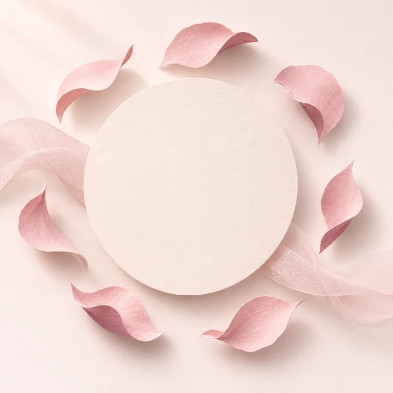
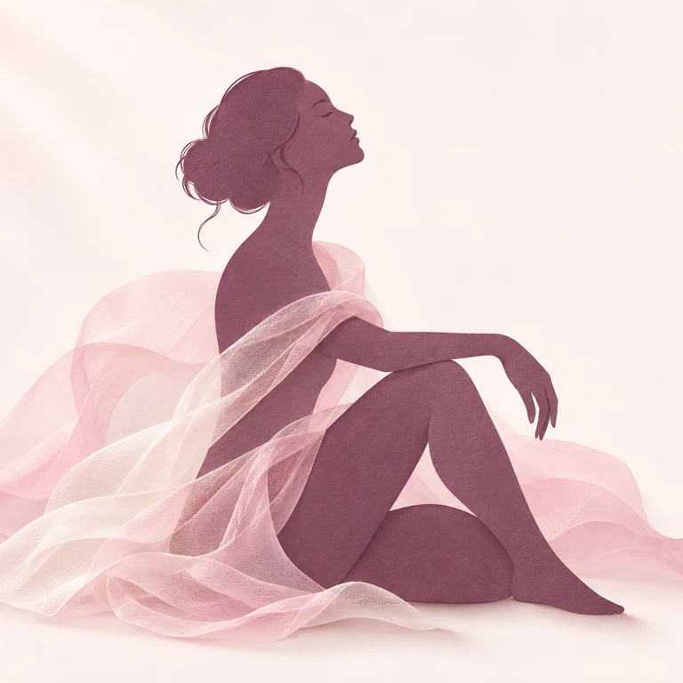
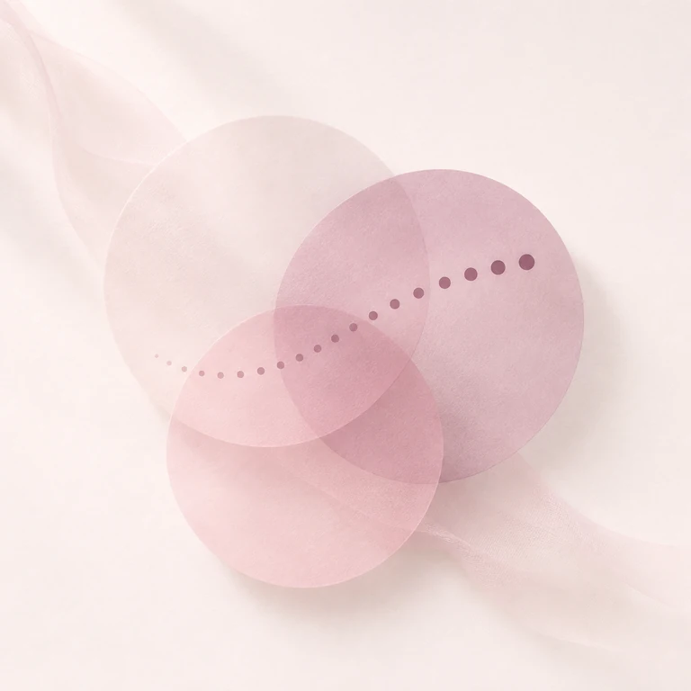
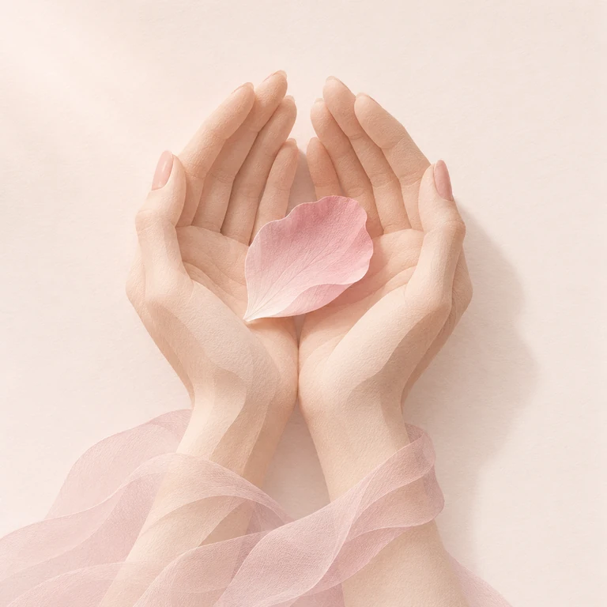
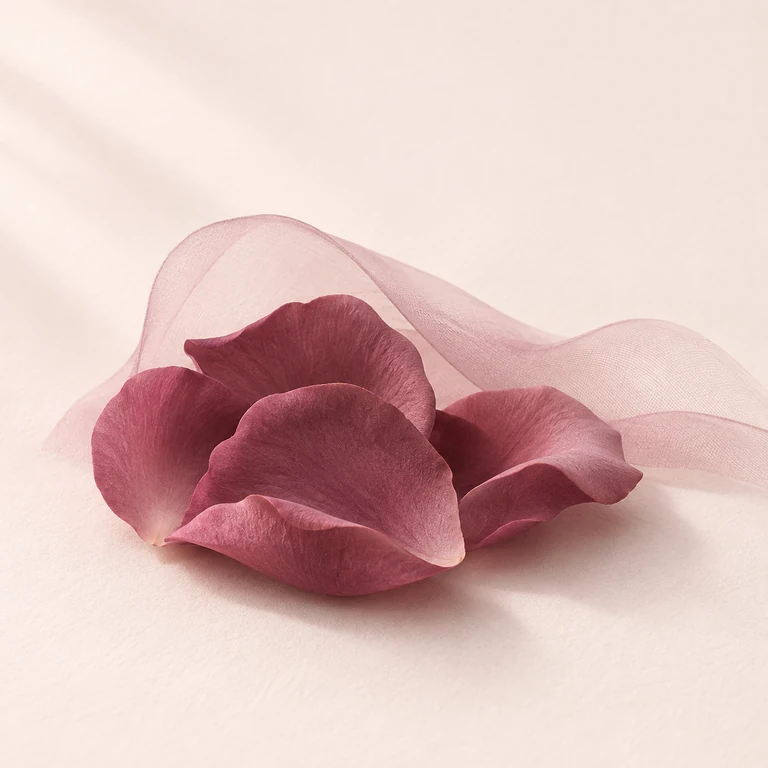
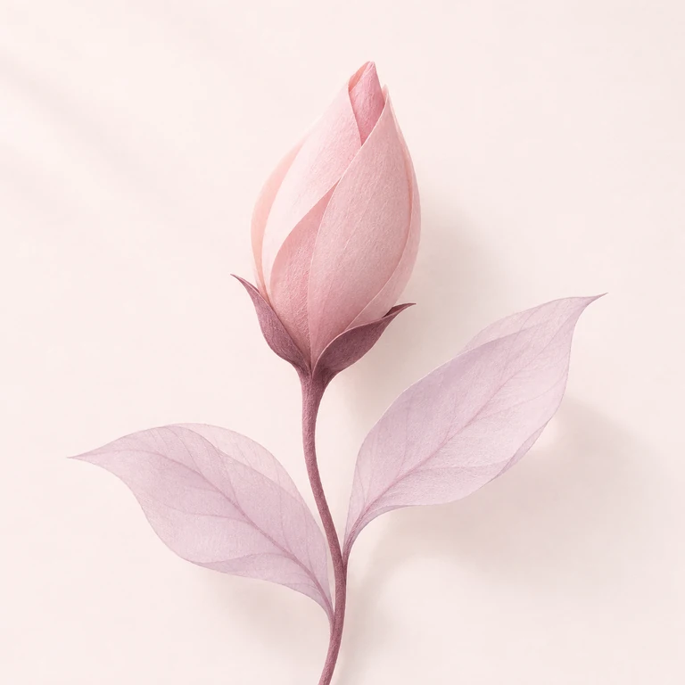
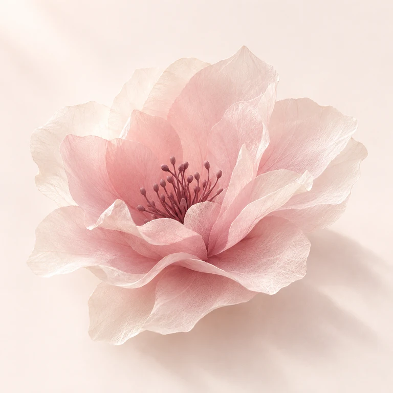
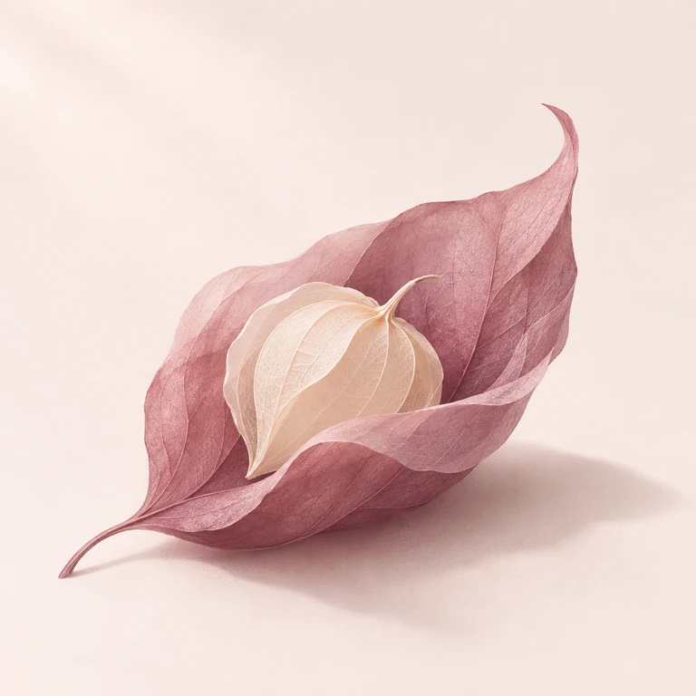

Onboarding step 1
768 × 768 · WEBP · Ready for review

Onboarding step 2
768 × 768 · WEBP · Ready for review

Onboarding step 3
768 × 768 · WEBP · Ready for review

Onboarding step 4
768 × 768 · WEBP · Ready for review

Menstrual phase
768 × 768 · WEBP · Ready for review

Follicular phase
768 × 768 · WEBP · Ready for review

Ovulatory phase
768 × 768 · WEBP · Ready for review

Luteal phase
768 × 768 · WEBP · Ready for review